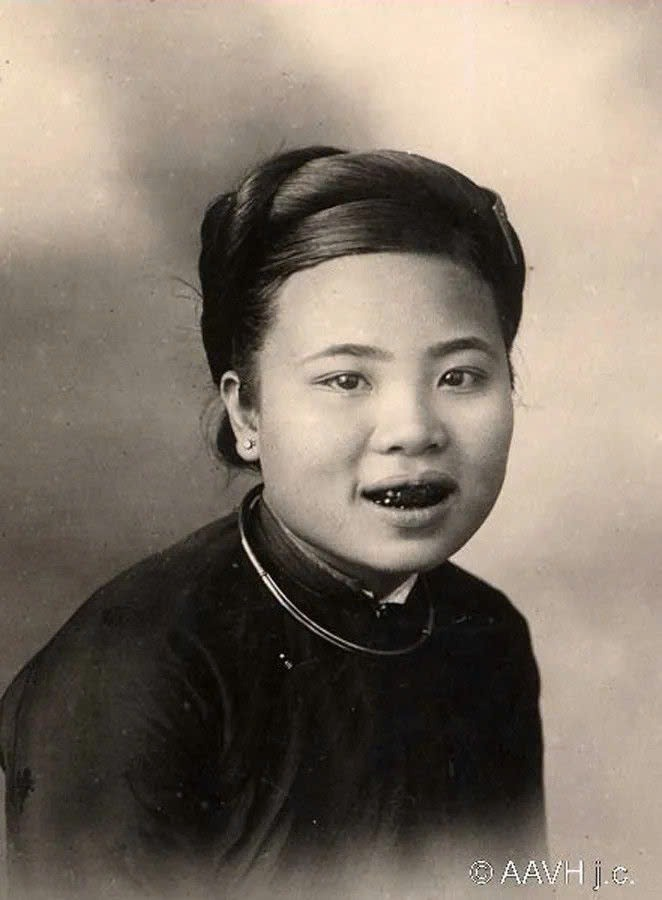
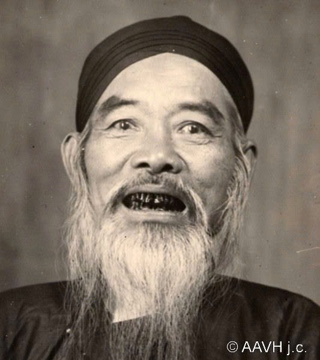
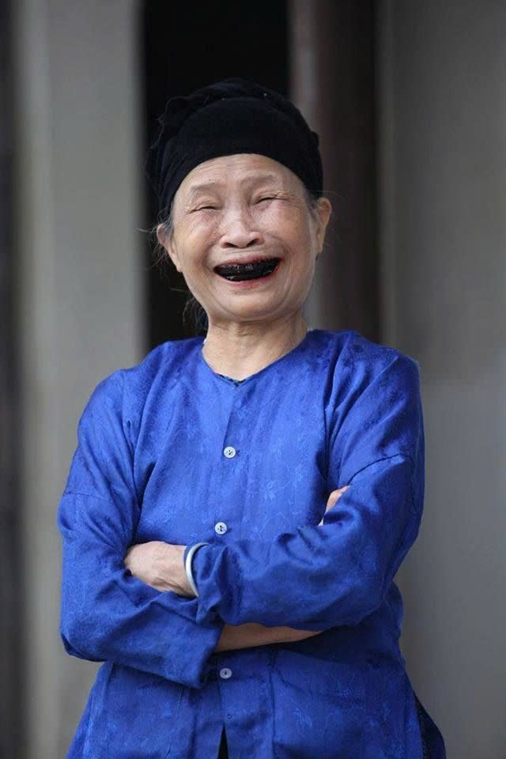
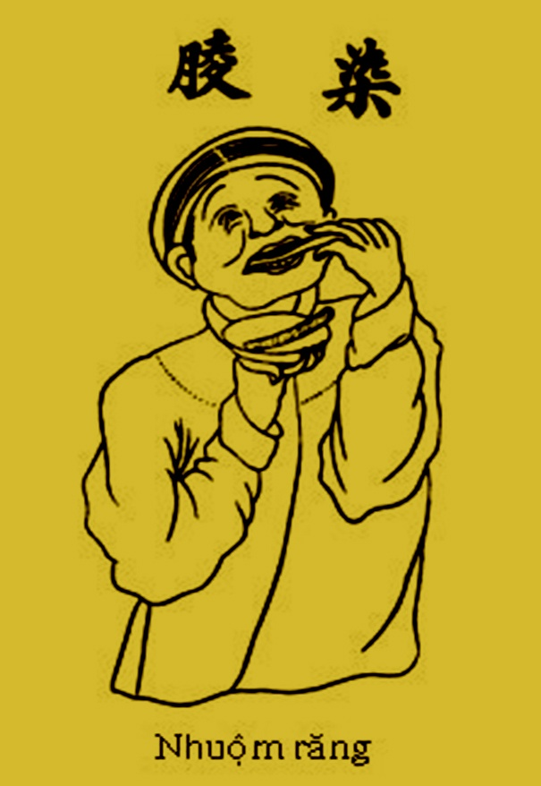

RĂNG ĐEN MÔI ĐỎ
TỤC NHUỘM RĂNG ĐEN: TỪ CỘI NGUỒN VĂN LANG ĐẾN “Vũ Khí” CHỐNG ĐỒNG HÓA PHƯƠNG BẮC
BLACKENED TEETH: FROM VĂN LANG ROOTS TO A “Cultural Weapon” AGAINST NORTHERN ASSIMILATION
Hơn hai thiên niên kỷ trước khi trở thành chuẩn mực thẩm mỹ trong ca dao, hàm răng đen hạt huyền đã là dấu ấn nhận diện nòi giống của cư dân Lạc Việt — một “hàng rào văn hóa” bất khuất giúp người Việt đứng vững trước hàng ngàn năm cưỡng bức đồng hóa từ các triều đại phong kiến phương Bắc.
More than two millennia before becoming a poetic ideal of beauty, glossy obsidian-dyed teeth served as the unmistakable identity mark of the Lạc Việt people — an unyielding cultural bulwark that resisted a thousand years of forced assimilation by Northern imperial dynasties.



Tục nhuộm răng đen của người Việt không phải là một trào lưu làm đẹp muộn màng, mà bắt nguồn sâu xa từ thời kỳ dựng nước Văn Lang – Âu Lạc (thuộc nền Văn hóa Đông Sơn, cách ngày nay khoảng 2.000 đến 2.500 năm). Trong các thư tịch cổ phương Bắc viết về vùng đất phương Nam như Sơn Hải Kinh, Dị Vật Chí hay Giao Châu Ký, các sử gia cổ đại đều ghi nhận cư dân Lạc Việt ở Giao Chỉ có tập tục đặc trưng là “khắc mình vẽ rồng, ăn trầu và nhuộm răng đen” (hắc xỉ).
Tooth blackening among the Vietnamese is not a late cosmetic fashion, but an ancient custom rooted in the foundational Văn Lang – Âu Lạc era (the Đông Sơn culture, dating back 2,000 to 2,500 years). Ancient chronicles describing the southern lands — including the Classic of Mountains and Seas, Records of Strange Things, and Records of Giao Châu — consistently documented that the Lạc Việt inhabitants practiced tattooing, betel chewing, and “blackening their teeth” (hắc xỉ).
Xuất phát từ môi trường sống vùng nhiệt đới sông nước và văn minh lúa nước, người Việt cổ sớm tìm ra các loại thảo mộc, nhựa cây và khoáng chất tự nhiên để bao bọc men răng. Trải qua hàng thiên niên kỷ, tập tục này kết tinh thành bản sắc văn hóa tự nhận diện của cộng đồng người Việt từ đồng bằng sông Hồng đến vùng Bắc Trung Bộ.
Living in a tropical riverine environment shaped by wet-rice civilization, ancient Vietnamese communities discovered indigenous resins, herbs, and minerals to coat their tooth enamel. Over millennia, this practice crystallized into a defining cultural marker across the Red River Delta and northern central plains.
Trong suốt hơn 1.000 năm Bắc thuộc và các cuộc kháng chiến chống quân xâm lược Hán, Đường, Tống, Minh, Thanh, các triều đại phong kiến phương Bắc luôn tìm cách xóa bỏ văn hóa bản địa của người Việt. Khốc liệt nhất là vào đầu thế kỷ XV (1407–1427), khi nhà Minh đô hộ Đại Ngu, chính quyền đô hộ đã ban hành lệnh cưỡng bức người Việt phải “óc phát bạch xỉ” — bắt đàn ông cạo tóc, bắt phụ nữ mặc áo ngắn quần dài kiểu Bắc và cấm tuyệt đối việc ăn trầu, nhuộm răng đen.
Throughout a millennium of Northern domination and subsequent invasions by the Han, Tang, Song, Ming, and Qing empires, northern courts relentlessly attempted to erase indigenous Vietnamese identity. Most ruthlessly during the Ming occupation (1407–1427), imperial authorities enforced decrees of “cropped hair and white teeth” — forbidding betel chewing and tooth blackening while forcing Northern dress codes.
Đánh cho để đen răng,
Đánh cho nó chích luân bất phản...” “Fight to keep our hair long,
Fight to keep our teeth black,
Fight until not a single chariot wheel returns...” — Hoàng Đế Quang Trung (Hịch Xuất Quân Năm Kỷ Dậu 1789) — Emperor Quang Trung (Imperial Battle Edict, 1789)
Bất chấp mọi lệnh cấm, người Việt vẫn truyền tai nhau giữ hàm răng đen như một mật mã căn tính thiêng liêng để phân biệt mình với người phương Bắc. Hàm răng đen vì thế vượt lên trên ý nghĩa thẩm mỹ, trở thành “vũ khí văn hóa chống đồng hóa” bảo vệ linh hồn dân tộc.
Defying imperial bans, Vietnamese people steadfastly preserved their blackened teeth as a sacred badge of sovereignty distinguishing them from Northern rulers. Blackened teeth thus transcended aesthetics to become a powerful cultural weapon against assimilation.
III. NHỮNG AI PHẢI NHUỘM RĂNG ĐEN TRONG XÃ HỘI VIỆT XƯA?
III. WHO PRACTICED TOOTH BLACKENING IN OLD VIETNAM?
Một lầm tưởng phổ biến ngày nay là chỉ có phụ nữ mới nhuộm răng đen. Thực tế lịch sử chứng minh: tất cả người Việt xưa — không phân biệt nam hay nữ, giàu hay nghèo, nông dân hay quan lại, sĩ phu và cả vua chúa trong triều đình — đều nhuộm răng đen.
A common modern misconception is that only women blackened their teeth. Historical records prove otherwise: virtually all Vietnamese in pre-modern society — men and women alike, peasants, Confucian scholars, mandarins, and royal court members — dyed their teeth black.
Nhuộm răng được xem là nghi thức trưởng thành bắt buộc. Khi thiếu niên nam nữ bước vào độ tuổi 13 đến 16 (tuổi cập kê), gia đình sẽ làm lễ hoặc chọn ngày lành để bắt đầu nhuộm răng. Trong xã hội truyền thống, người trưởng thành mà để răng trắng bị coi là khác thường, chưa chín chắn hoặc bị giễu cợt trong dân gian là “răng trắng như răng Ngô, răng Hán” hay “răng trắng nhởn”.
Tooth blackening functioned as a mandatory rite of passage into adulthood. Between ages 13 and 16, both boys and girls underwent the dyeing ritual. In traditional village society, an adult with un-dyed white teeth was viewed as immature, uncouth, or foreign — often mocked in folk idioms as having “foreign white teeth.”
Đối với người con gái, hàm răng đen nhánh như hạt huyền là thước đo của sự nết na, đảm đang và duyên dáng. Đối với người đàn ông, hàm răng đen thể hiện sự chững chạc, lịch lãm của bậc trượng phu giữ trọn lễ nghĩa tổ tiên. Tập tục toàn dân này kéo dài bền bỉ cho tới tận những năm 1930–1940.
For young women, obsidian-glossy teeth signified grace, virtue, and readiness for marriage; for men, they embodied dignity and fidelity to ancestral custom. This nationwide practice endured well into the 1930s and 1940s.
KHAI QUẬT KHẢO CỔ CHỨNG MINH LỚP Sơn mài sinh học BẢO VỆ RĂNG SUỐT NGÀN NĂM
ARCHAEOLOGICAL DIGS REVEAL A NATURAL Bio-lacquer THAT PROTECTED TEETH FOR MILLENNIA

Các cuộc khai quật khảo cổ học tại hàng loạt di chỉ mộ thuyền và mộ đất thuộc Văn hóa Đông Sơn (niên đại cách nay 2.000 – 2.500 năm) như di chỉ Châu Can (Hà Nội), Núi Nấp, Đông Tiến, Quỳ Chử (Thanh Hóa) và Làng Vạc (Nghệ An) đã mang lại bằng chứng vật chất xác thực: nhiều di cốt người Việt cổ vẫn còn lưu giữ hàm răng phủ lớp màu đen nhánh.
Archaeological excavations at boat-coffin and earth burials of the Đông Sơn Culture (2,000–2,500 years BP) — including Châu Can (Hanoi), Núi Nấp, Đông Tiến, Quỳ Chử (Thanh Hóa), and Làng Vạc (Nghệ An) — uncovered ancient skeletal remains whose teeth still bore an intact, lustrous black coating.
Đáng kinh ngạc hơn, kết quả giám định nhân trắc học trên các mẫu răng cổ này cho thấy tỷ lệ sâu răng và viêm nha chu cực kỳ thấp, men răng không bị mài mòn dù điều kiện sinh hoạt cổ đại chưa có kem đánh răng.
Remarkably, bio-anthropological analysis of these ancient teeth revealed an extraordinarily low rate of dental caries and alveolar bone loss, with enamel preserved in pristine condition.
Dưới góc độ hóa sinh và nha khoa hiện đại, thuốc nhuộm răng cổ truyền là một hợp chất bảo vệ răng hoàn hảo:
Modern biochemical and dental research confirms that traditional Vietnamese tooth dye acts as a potent clinical sealant:
1. Phức hợp Tannin & Sắt (Phèn đen + Ngũ bội tử): Tạo kết tủa Ferric Tannate không tan, bịt kín các ống ngà li ti và ngăn chặn axit ăn mòn men răng.
2. Nhựa Cánh Kiến (Shellac tự nhiên): Tạo màng polymer sinh học kỵ nước bao bọc bề mặt răng.
3. Nhựa Đốt Gáo Dừa: Giàu hợp chất Phenolic và Creosote tự nhiên có khả năng tiêu diệt vi khuẩn Streptococcus mutans (tác nhân chính gây sâu răng) và làm săn chắc mô nướu.
1. Ferric Tannate Complex (Black Alum + Gallnut): Seals microscopic dentinal tubules and blocks acid demineralization.
2. Sticklac Resin (Natural Shellac): Forms a hydrophobic bio-polymer shield over enamel.
3. Pyrolyzed Coconut Shell Tar: Rich in antibacterial phenolic compounds that inhibit Streptococcus mutans and strengthen gingival tissue.

Cà Răng & Khử Men
Enamel Cleansing & Etching
Người nhuộm dùng vỏ cau khô chà kỹ với muối trắng để lấy sạch mảng bám, sau đó ngậm nước cốt chanh hoặc giấm thanh cho men răng hơi mềm và mở nhẹ bề mặt, giúp thuốc nhuộm bám sâu.
Dried areca husks and salt are rubbed across the teeth to remove plaque, followed by holding lemon juice or rice vinegar in the mouth to mildly etch the enamel surface for deep dye absorption.
Nhuộm Đỏ (Vào Cánh Kiến)
Crimson Base (Sticklac Application)
Bột nhựa cánh kiến đỏ trộn cùng nước cốt chanh, rượu gạo và vỏ lựu đun cô đặc thành cao, phết lên lá trầu hoặc bẹ cau rồi áp chặt vào hai hàm răng mỗi đêm cho đến khi răng lên màu đỏ tía trầm.
Sticklac resin simmered with pomegranate rind, lemon juice, and rice wine is spread onto strips of betel leaf or areca sheath and pressed onto the teeth overnight until they turn deep crimson-plum.
Vào Đen (Phèn Đen & Ngũ Bội)
Blackening (Iron Alum & Gallnut)
Hỗn hợp phèn đen (muối sắt) hòa cùng bột ngũ bội tử giàu tannin được đắp lên răng. Phản ứng hóa học tự nhiên giữa sắt và nền cánh kiến đỏ chuyển màu răng sang sắc đen nhánh.
A paste of black iron alum and tannin-rich gallnut powder is applied. The chemical reaction between iron ions and the crimson sticklac base transforms the teeth to a deep obsidian black.
Giữ Bóng (Lên Nước Hạt Huyền)
Obsidian Glaze (Coconut Shell Tar)
Đốt vỏ gáo dừa khô trên lưỡi dao sắt để hứng chất nhựa đen sánh (nhựa hạt huyền) quết lên răng nhằm khóa màu bền vĩnh viễn. Trong suốt các ngày nhuộm, người nhuộm chỉ nuốt cháo nguội, kiêng nhai đồ cứng.
Dried coconut shells are burned against cold iron to condense a glossy black tar, brushed onto the teeth to lock in a mirror-like sheen. Throughout the week, only cool porridge is swallowed without chewing.
CÒN DUY TRÌ HIỆN NAY
MAINTAINING THE CUSTOM
Hiện nay tại Việt Nam, bên cạnh thế hệ các cụ cao niên người Kinh, Mường, Tày, Nùng ở đồng bằng và trung du Bắc Bộ, tục nhuộm răng đen vẫn được lưu giữ ở khoảng 6 đến 8 dân tộc thiểu số vùng núi Tây Bắc (đặc biệt tại Lai Châu, Điện Biên, Sơn La, Lào Cai) gồm: dân tộc Lự, Si La, Mảng, Kháng, Cống, Lào và một bộ phận người Thái đen, Pà Thẻn.
Today in Vietnam, alongside elderly generations of the Kinh, Mường, Tày, and Nùng peoples, tooth blackening continues to be practiced or preserved among 6 to 8 ethnic minority communities in the Northwest highlands (Lai Châu, Điện Biên, Sơn La), notably the Lự, Si La, Mảng, Kháng, Cống, Lào, and Black Thái peoples.
Tiêu biểu và sống động nhất là dân tộc Lự (tại huyện Tam Đường, Sìn Hồ – tỉnh Lai Châu). Với người Lự, thiếu nữ từ 13–15 tuổi vẫn giữ truyền thống nhuộm răng bằng nhựa cây rừng (cây mạy tỉu) suốt 5–7 đêm liền. Hàm răng đen bóng như hạt huyền là niềm tự hào sắc tộc và vẻ đẹp duyên dáng không thể thiếu trong các lễ hội bản làng.
Most vibrant is the Lự ethnic group in Tam Đường and Sìn Hồ districts (Lai Châu Province). Lự girls aged 13–15 still blacken their teeth using smoke and resin from forest mạy tỉu wood over 5–7 nights, celebrating jet-black teeth as a badge of ethnic pride and marriageability.
& CHÂU Á CỔ ĐẠI
& ASIAN PARALLELS
Đặt trong bức tranh rộng lớn của khu vực, tục nhuộm răng đen là di sản văn hóa chung của vành đai cư dân nông nghiệp nhiệt đới Đông Nam Á: từ người Lào, người Thái ở lưu vực sông Mê Kông, người Shan ở Myanmar, cho đến các bộ tộc bản địa tại đảo Luzon, Mindanao (Philippines) và quần đảo Indonesia (tục Sisig).
Within the broader regional tapestry, tooth blackening represents a shared cultural heritage across Southeast Asia: practiced by Lao and Thai communities along the Mekong, the Shan of Myanmar, and indigenous Austronesian groups across Luzon and Mindanao (the Philippines) and the Indonesian archipelago.
Tại Đông Á, tập tục này có sự tương đồng thú vị với tục Ohaguro (お歯黒) của Nhật Bản kéo dài từ thời Heian đến cuối thời Minh Trị — nơi phụ nữ quý tộc và võ sĩ Samurai nhuộm răng đen bằng dung dịch sắt ngâm giấm (Kanemizu) và bột ngũ bội tử như biểu tượng của sự thủy chung và thanh cao.
In East Asia, the custom shares a striking parallel with Japanese Ohaguro (お歯黒) from the Heian through Meiji periods, where aristocrats and married women dyed their teeth black using iron-acetate solution (Kanemizu) and gallnut tannin as an emblem of maturity and fidelity.
LỜI CA DAO CỔ • GẠCH BÔNG XANH LỤC BẢO
GIAO THOA DI SẢN & NGHỆ THUẬT ĐƯƠNG ĐẠI
FOLK POETRY • EMERALD CERAMIC TILES
HERITAGE REIMAGINED IN CONTEMPORARY ART


Trong văn hóa truyền thống Việt Nam, nhuộm răng đen và ăn trầu là hai nửa không thể tách rời. Miếng trầu têm cánhượng (kết hợp lá trầu không cay nồng, quả cau ngọt chát, chút vôi tôi trắng và vỏ chay) khi nhai tạo nên sắc đỏ hồng rực rỡ trên đôi môi, đồng thời sát khuẩn và làm cho lớp men răng đen càng thêm bóng mượt như gương.
In Vietnamese tradition, tooth blackening and betel chewing are inseparable companions. The betel quid — combining piper betle leaf, areca nut, slaked lime, and forest bark — stains the lips a vivid crimson while naturally polishing and disinfecting the blackened tooth enamel.
Sự tương phản thị giác mãnh liệt giữa Răng Đen (do nhuộm hạt huyền) và Môi Đỏ (do ăn trầu) đã đi vào ca dao: “Năm quan mua lấy miệng cười / Mười quan chẳng tiếc, tiếc người răng đen”. Đó chính là nguồn cảm hứng cốt lõi cho dự án thiết kế “Răng Đen Môi Đỏ” (@neneneth) — tái hiện vẻ đẹp kiêu hãnh của người Việt xưa qua bảng màu gạch bông xanh lục bảo, sắc hồng môi trầu và ấn phẩm quạt cầm tay (Handfan) mang hơi thở nghệ thuật đương đại.
This striking visual contrast between Black Teeth (from lacquer dyeing) and Red Lips (from betel chewing) inspired timeless folk verses: “Five strings of coins to buy a smile / Ten I would gladly spend for the one with blackened teeth.” This duality forms the heart of the “Răng Đen Môi Đỏ” (@neneneth) art and Handfan design project — translating ancient Vietnamese pride into a contemporary visual language.